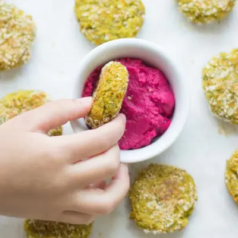

Baked Veggie Nuggets

Ingredients
- 2 medium carrots, roughly chopped into small pieces (140g)
- 1 cup broccoli florets (75g)
- 1/2 cup peas (65g)
- 1/2 cup corn (70g)
- 2 eggs
- 1 small garlic clove (can use 1 tsp minced garlic or garlic powder)
- 1 teaspoon Italian seasoning
- 1 cup breadcrumbs (100g), regular or panko style
- Optional: 1/2 cup breadcrumbs for coating, 1/4-1/3 cup cheese
Steps
- Preheat oven to 425° Fahrenheit. LIghtly grease a baking sheet or line with parchment paper or baking mat.
- Add carrots and broccoli into a food processor/blender and pulse several times until finely chopped.
- Add the rest of the ingredients and pulse until combined and chunky (be careful not to overmix)
- Take about 1 tablespoon of the mixture and form into a ball. Flatten slightly into nugget shapes.
- Roll in extra breadcrumbs if desired.
- Bake at 425°F for 20-25 minutes, flip halfway (see note)
- Serve with your favorite condiment, like ketchup, ranch, etc.
- Heat oil in a cast iron or non-stick skillet over medium-high heat. Working in batches, add nuggets in skillet and cook about 4 minutes each side, or until golden brown and crispy.
Recipe by Min Kwon · Kidfriendly Meals, from MJ and Hungryman. Saved here for personal use; the original has the full notes, tips and photos. Open original